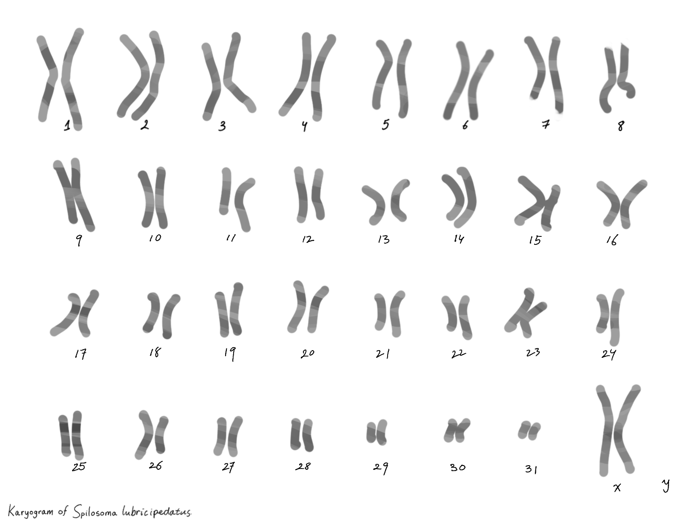
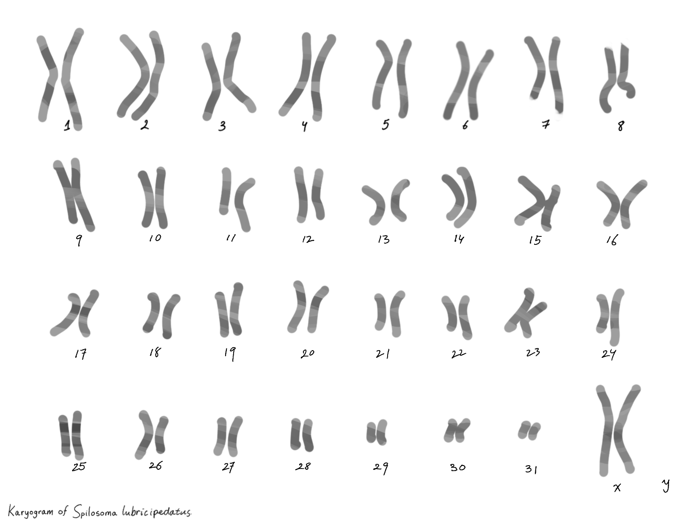

The cell structure of Felis mantus
Content of the first news article.

This is a animal discovered by scientist in 2023, This particular type of species evolved from vampire moth, with its genus, ‘Calyptra’ indicating it’s a group of moths in subfamily Calpinae of the family Erebidae that are known as vampire moths because they are capable of drinking blood. Vampire moths normally pierce fruit to suck the juice, but they will also drink blood from humans. The species name is a combination of lubricipeda (white moth, also known as White Ermine), and catus (from this appearance). These type of moths are around the size of a fruit bat, with its average total body length of 5.9 in and full grown moth usually weigh 80g.
Content of the first news article.
Content of the second news article.